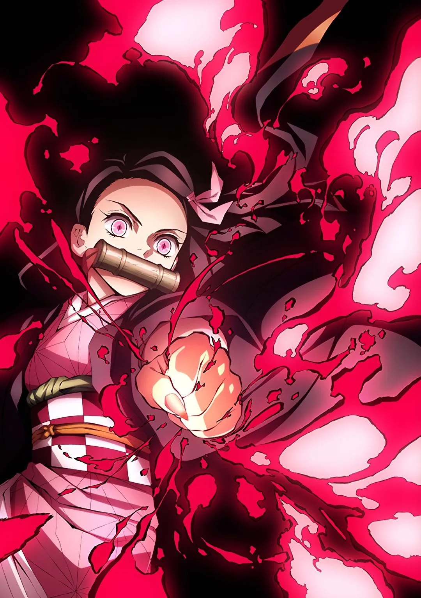
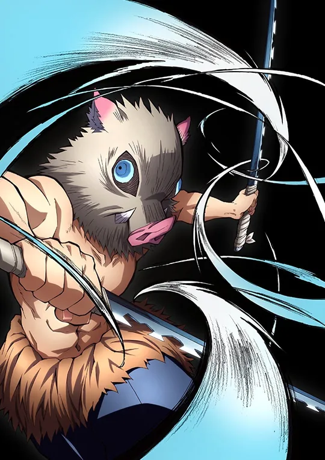
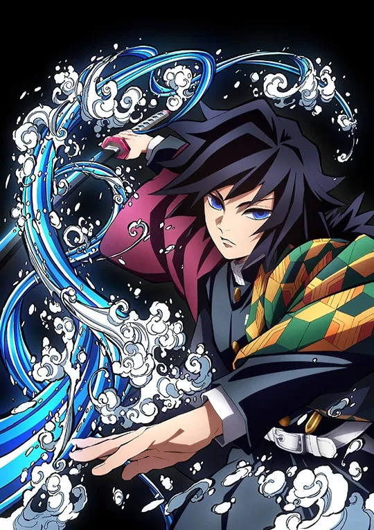

요즘 나를 가장 힘들게 하는 스트레스는 어디에서 올까?
간단한 테스트로 내 스트레스 패턴을 체크하고,
나에게 꼭 맞는
귀멸의 칼날 캐릭터 × 아로마 향을 추천받아보자.
님의
결과는?
탄지로 타입
흔들리지 않고 목표를 향해 나아가고 싶은, 꾸준한 몰입형 스트레스 유형
🌿로즈마리 (Rosemary)
집중력 향상 · 공부/작업 몰입용
해야 할 일은 많은데, 머리가 자꾸 산만해지고 집중이 흐트러지는
편인가요? 로즈마리 향은 뇌를 깨우기보다는, 차분하게 한 가지 일에
오래 몰입할 수 있도록 도와주는 향입니다. 시험 공부, 프로젝트, 업무
정리 등 장기적인 집중이 필요한 당신에게 잘 어울립니다. 탄지로 타입인
당신은 한 번 마음먹은 일은 끝까지 해내는 꾸준한 스타일이에요. 다만,
피로가 쌓이면 집중력이 급격히 떨어질 수 있어, 로즈마리 향으로 집중의
흐름을 다시 잡아주는 테라피가 도움이 됩니다.
님의
결과는?
젠이츠 타입
불안과 걱정이 많고, 감정 기복이 큰 감정 민감형 스트레스 유형
🌸자스민 (Jasmine)
감정 회복 · 우울감 완화
작은 일에도 걱정이 커지거나, 감정 기복이 심해지는 편인가요? 자스민
향은 위로가 필요한 마음을 부드럽게 감싸주는 향으로, 불안과 우울감이
섞여 있는 감정 상태에 잘 어울립니다. 젠이츠 타입의 당신은 겉으로는
가볍게 넘기는 것 같지만, 속으로는 생각이 많고 상처를 오래 안고 가는
편일 수 있어요. 자스민 향은 불안으로 꼬여 있는 감정을 조금 풀어주고,
다시 한 번 자신을 믿고 나아갈 수 있게 도와주는 정서 테라피 역할을
합니다.

님의
결과는?
네즈코 타입
몸과 마음이 동시에 지쳐 있는, 수면·휴식 회복형 스트레스 유형
💤라벤더 (Lavender)
숙면 · 릴렉싱 · 스트레스 완화
머리도 마음도 바쁜데, 정작 가장 부족한 건 '제대로 쉬는 시간'일 수
있어요. 라벤더 향은 긴장된 신경을 완화하고, 깊은 수면을 돕는
대표적인 릴렉싱 향입니다. 네즈코 타입인 당신은 바쁘게 하루를
보내면서도 나를 위한 회복 시간은 미루는 경향이 있을 수 있어요.
잠들기 전, 침대 근처에 라벤더 향을 은은하게 사용해보세요. 지친
신경이 차분히 가라앉고, 스트레스에 소모되는 에너지를 '회복'으로
돌려줄 수 있습니다.

님의
결과는?
이노스케 타입
스트레스를 에너지로 태워버리는, 활동·액티브형 스트레스 유형
🍋레몬 (Lemon)
기분 전환 · 활력 충전
스트레스를 받으면 오히려 몸을 더 움직이고 싶어지거나, 한 번에
에너지를 쏟아내는 스타일인가요? 레몬 향은 머리를 상큼하게 깨우고,
무거워진 기분에 활력을 넣어주는 향입니다. 이노스케 타입의 당신은
가만히 있기보다는, 무엇인가를 하면서 스트레스를 풀 때 더 시원함을
느끼는 편일 수 있어요. 아침에 레몬 계열 향을 사용하면 하루의
스타트를 더 가볍고 경쾌하게 시작할 수 있고, 오후 늘어지는 시간에도
기분 전환용 으로 잘 어울립니다.
님의
결과는?
미츠리 타입
마음이 따뜻하지만, 쉽게 지치고 소진되는 힐링 필요형 스트레스 유형
🌲히노끼 (Hinoki)
휴식 · 힐링 · 스파 감성
남을 많이 챙기고, 주변을 살피다 보니 정작 나 자신을 돌보는 시간은
부족하지 않나요? 히노끼 향은 편백나무의 편안한 숲 내음을 담고 있어,
마음을 차분하게 가라앉히고 깊은 휴식을 돕는 향입니다. 미츠리 타입인
당신은 따뜻한 마음만큼 쉽게 지치고 번아웃을 느끼기 쉬운 사람일 수
있어요. 샤워 후, 자기 전, 혹은 조용한 시간에 히노끼 향을 켜두면 마치
작은 홈스파에 온 듯한 힐링 효과를 느낄 수 있습니다.

님의
결과는?
기유 타입
멍해진 정신을 깨우고 싶은, 클리어 타입 스트레스 유형
❄️페퍼민트 (Peppermint)
즉각 각성 · 정신 맑게 하기
몸은 버티고 있지만, 머리가 자주 멍해지고 정신이 또렷하지 않은 느낌이
드나요? 페퍼민트 향은 시원한 멘톨감으로 머리를 빠르게 깨워주고,
두통이나 피로감이 몰려올 때 즉각적인 각성을 돕는 향입니다. 기유
타입의 당신은 속으로는 많은 생각을 하고 있지만, 겉으로는 표현이 적고
묵묵히 버티는 스타일일 수 있어요. 중요한 순간, 또렷한 판단이 필요한
상황에서 페퍼민트 계열 향은 정신을 맑게 만들어주는 테라피가 되어 줄
거예요.